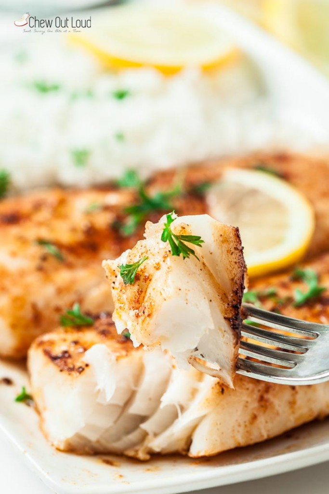

Fish recipe

Description
Lemon Butter Fish may be more frequently ordered at restaurants than made at home. It’s not your typical Tuesday night, in-between carpool fare.
Ingredients
- 3 TB melted butter (I use salted, but unsalted is fine) — real butter makes a huge difference in flavor
- Juice and zest from 1 medium lemon — avoid bottled lemon juice. If your lemon is on the larger size, use less of it.
- 1 tsp kosher salt, plus extra to taste
- 1 tsp paprika, for a bit of smoky flavor and natural color
- 1 tsp garlic powder; it serves as your weeknight time-saving aromatic
- 1 tsp onion powder, same as above.
- 1/4 tsp freshly ground black pepper; always use fresh peppercorns and grind your black pepper fresh. It makes a huge flavor difference.
- 3 TB olive oil; we use olive oil for most of our cooking, which feels healthier to me, as well as works really well with most recipes. We even use it in chocolate cake — ridiculously moist.
- freshly chopped basil or parsley leaves, for garnish and flavor
- extra lemon slices for serving – kind of a vanity thing, but fish always looks prettier with freshly sliced lemon slivers on top 🙂
Instruction
- Use paper towels to thoroughly pat-dry excess moisture from fish fillets – this step is crucial for fish to brown nicely in pan. Set aside.
- In a bowl, combine melted butter, lemon juice and zest, and 1/2 tsp kosher salt. Stir to combine well. Taste and add a bit more kosher salt, if desired.
- In a separate bowl, combine the remaining 1/2 tsp kosher salt, paprika, garlic powder, onion powder, and black pepper. Evenly press spice mixture onto all sides of fish fillets.
- In a large, heavy pan over medium high heat, heat up the olive oil until hot. Once your oil is sizzling, Cook 2 fish fillets at a time to avoid overcrowding (allows for even browning.) Cook each side just until fish becomes opaque, feels somewhat firm in the center, and is browned – lightly drizzle some of the lemon butter sauce as you cook, reserving the rest for serving. Take care not to over-cook, as that will result in a tougher texture. Season with extra kosher salt and freshly ground black pepper to taste.
- Serve fish with with remaining lemon butter sauce, basil or parsley, and lemon wedges.
return to main page